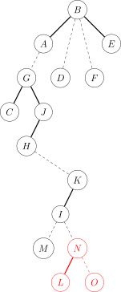

Link Cut Tree
Giới thiệu
Link/Cut Tree là một cấu trúc dữ liệu dùng để giải quyết các bài toán về cây động (dynamic tree).
Link/Cut Tree còn được gọi là Link-Cut Tree, viết tắt là LCT. Tuy nhiên, nó không được gọi là "Cây động" (Dynamic Tree), vì "Cây động" dùng để chỉ một lớp các bài toán.
Splay Tree là nền tảng của LCT, nhưng Splay Tree được sử dụng trong LCT có một số chi tiết khác biệt so với Splay thông thường (đã được mở rộng thêm).
Giới thiệu vấn đề
Cần bảo trì một cái cây, hỗ trợ các thao tác sau:
- Sửa đổi trọng số đường đi giữa hai điểm.
- Truy vấn tổng trọng số đường đi giữa hai điểm.
- Sửa đổi trọng số cây con của một điểm.
- Truy vấn tổng trọng số cây con của một điểm.
Đây là một bài toán mẫu về Phân rã Heavy-Light (HLD - Heavy-Light Decomposition).
Tuy nhiên, nếu thêm một thao tác nữa:
- Cắt và nối một số cạnh, đảm bảo đồ thị vẫn là một cây.
Yêu cầu đưa ra câu trả lời trực tuyến (online).
Lúc này bài toán trở thành bài toán cây động, và có thể sử dụng LCT để giải quyết.
Bài toán Cây động
Bảo trì một rừng (forest), hỗ trợ xóa một cạnh nào đó, thêm một cạnh nào đó, và đảm bảo sau khi thêm/xóa cạnh thì đồ thị vẫn là một rừng. Chúng ta cần bảo trì một số thông tin của rừng này.
Các thao tác thường gặp bao gồm: kiểm tra tính liên thông giữa hai điểm, tổng trọng số đường đi giữa hai điểm, nối hai điểm, cắt một cạnh nào đó, sửa đổi thông tin, v.v.
Nhìn lại Phân rã Heavy-Light (HLD) từ góc độ LCT
- Phân rã toàn bộ cây dựa trên kích thước cây con và đánh lại nhãn.
- Chúng ta thấy rằng sau khi đánh lại nhãn, cây hình thành các khoảng liên tiếp dưới dạng chuỗi (chain), và có thể sử dụng Segment Tree để thao tác trên đoạn.
Chuyển sang bài toán Cây động
Chúng ta thấy rằng HLD vừa đề cập sử dụng kích thước cây con làm điều kiện phân chia. Vậy liệu ta có thể định nghĩa lại một cách phân chia khác để phù hợp hơn với bài toán cây động không?
Hãy xem xét bài toán cây động cần loại chuỗi (chain) nào.
Vì ta bảo trì động một khu rừng, hiển nhiên ta mong muốn chuỗi này là chuỗi do ta chỉ định, để thuận tiện cho việc giải quyết bài toán.
Phân rã chuỗi đặc (Solid Chain Decomposition)
Đối với các cạnh nối từ một điểm đến tất cả các con của nó, chúng ta tự chọn một cạnh để phân rã, ta gọi cạnh được chọn là cạnh đặc (solid edge), các cạnh khác là cạnh ảo (virtual edge). Đối với cạnh đặc, ta gọi nút con được kết nối là con đặc (solid child). Một chuỗi bao gồm các cạnh đặc được gọi là chuỗi đặc (solid chain). Hãy nhớ lý do quan trọng nhất khiến ta chọn phân rã chuỗi đặc: nó do ta lựa chọn, linh hoạt và có thể thay đổi. Chính vì tính linh hoạt này, ta sử dụng Splay Tree để bảo trì các chuỗi đặc này.
LCT
Chúng ta có thể hiểu đơn giản LCT là việc sử dụng các cây Splay để bảo trì việc phân rã chuỗi cây một cách động, nhằm thực hiện các thao tác trên đoạn trên cây động. Với mỗi chuỗi đặc, ta xây dựng một Splay để bảo trì thông tin của cả chuỗi đó.
Cây phụ trợ (Auxiliary Tree)
Trước tiên, hãy xem xét một số tính chất của cây phụ trợ, sau đó tìm hiểu cấu trúc cụ thể của nó qua một hình ảnh minh họa.
Trong bài viết này, bạn có thể coi một số Splay tạo thành một cây phụ trợ, mỗi cây phụ trợ bảo trì một cây trong rừng, và các cây phụ trợ tạo thành LCT bảo trì toàn bộ rừng.
- Cây phụ trợ bao gồm nhiều cây Splay, mỗi Splay bảo trì một đường đi trong cây gốc. Thứ tự duyệt trung tố (in-order traversal) của Splay này tạo ra dãy các điểm tương ứng với một đường đi "từ trên xuống dưới" trong cây gốc.
- Mỗi nút trong cây gốc tương ứng một-một với một nút Splay trong cây phụ trợ.
- Các cây Splay trong cây phụ trợ không độc lập với nhau. Nút cha của gốc mỗi cây Splay lẽ ra là rỗng, nhưng trong LCT, nút cha của gốc mỗi cây Splay trỏ đến nút cha của chuỗi này trong cây gốc (tức là cha của điểm nằm cao nhất trong chuỗi). Loại liên kết cha này khác với liên kết cha trong Splay thông thường ở chỗ con nhận cha nhưng cha không nhận con (Path Parent Pointer), tương ứng với một cạnh ảo trong cây gốc. Do đó, mỗi thành phần liên thông có đúng một điểm mà nút cha là rỗng.
- Nhờ các tính chất trên của cây phụ trợ, ta không cần bảo trì cây gốc cho bất kỳ thao tác nào. Từ cây phụ trợ, trong mọi tình huống ta đều có thể khôi phục ra một cây gốc duy nhất, nên ta chỉ cần bảo trì cây phụ trợ là đủ.
Bây giờ chúng ta có một cây gốc như hình vẽ. (Nét đậm là cạnh đặc, nét đứt là cạnh ảo.)

Theo định nghĩa vừa rồi, cấu trúc của cây phụ trợ sẽ như hình dưới đây.

Xem xét mối quan hệ cấu trúc giữa cây gốc và cây phụ trợ
- Chuỗi đặc trong cây gốc: Trong cây phụ trợ, các nút này nằm trong cùng một cây Splay.
- Chuỗi ảo (cạnh ảo) trong cây gốc: Trong cây phụ trợ, Father của nút con (gốc của Splay con) trỏ đến nút cha, nhưng cả hai con của nút cha đều không trỏ đến nút con đó.
- Lưu ý: Gốc của cây gốc không nhất thiết là gốc của cây phụ trợ.
- Con trỏ Father trong cây gốc không giống với con trỏ Father trong cây phụ trợ.
- Cây phụ trợ có thể thay đổi gốc (Change Root) tùy ý miễn là thỏa mãn tính chất của cây phụ trợ và Splay.
- Việc chuyển đổi giữa cạnh ảo và cạnh đặc có thể dễ dàng thực hiện trên cây phụ trợ, đây chính là hiện thực hóa việc phân rã chuỗi động.
Khai báo biến sẽ sử dụng
ch[N][2]: Con trái và con phải.f[N]: Con trỏ cha.sum[N]: Tổng trọng số đường đi.val[N]: Trọng số của điểm.tag[N]: Nhãn đảo ngược (reverse tag).laz[N]: Nhãn trọng số (lazy tag cho update giá trị).siz[N]: Kích thước cây con trên cây phụ trợ.- Other_Vars: Các biến khác.
Khai báo hàm
Các hàm cấu trúc dữ liệu chung (theo nghĩa đen)
PushUp(x): Cập nhật thông tin từ con lên cha.PushDown(x): Đẩy thông tin từ cha xuống con.
Các hàm của Splay Tree
Dưới đây là các hàm dùng trong Splay Tree, chi tiết có thể xem tại bài viết Splay Tree.
Get(x): Xác định \(x\) là con trái hay con phải của cha nó.Splay(x): Xoay \(x\) lên gốc của Splay hiện tại thông qua sự phối hợp với thao tác Rotate.Rotate(x): Xoay \(x\) lên một tầng.
Các thao tác mới
Access(x): Đưa tất cả các điểm từ gốc (của cây gốc) đến \(x\) vào một chuỗi đặc, làm cho đường đi từ gốc đến \(x\) trở thành một đường đi đặc, và nằm trong cùng một cây Splay. Chỉ có thao tác này là bắt buộc phải cài đặt, các thao tác khác tùy thuộc vào đề bài.IsRoot(x): Kiểm tra xem \(x\) có phải là gốc của cây Splay chứa nó hay không.Update(x): Sau khiAccess, đệ quy từ trên xuống dưới đểPushDowncập nhật thông tin.MakeRoot(x): Biến điểm \(x\) thành gốc của cây (cây gốc/rừng hiện tại).Link(x, y): Nối một cạnh giữa hai điểm \(x, y\).Cut(x, y): Xóa cạnh giữa hai điểm \(x, y\).Find(x): Tìm số hiệu nút gốc của cây chứa \(x\).Fix(x, v): Sửa đổi trọng số của điểm \(x\) thành \(v\).Split(x, y): Tách đường đi giữa \(x\) và \(y\) ra để thực hiện thao tác trên đoạn.
Macro định nghĩa
#define ls ch[p][0]#define rs ch[p][1]
Giải thích hàm
PushUp()
1 2 3 4 | |
PushDown()
1 2 3 4 5 6 | |
Splay() && Rotate()
Ở đây Splay() và Rotate() có một chút khác biệt so với Splay Tree thông thường.
1 2 3 4 5 6 7 8 9 10 11 12 13 14 15 16 17 18 | |
Các hàm trên có thể tham khảo thêm ở Splay Tree.
Dưới đây là các hàm đặc thù của LCT.
isRoot()
1 2 3 | |
Access()
1 2 3 4 5 6 7 8 9 10 | |
-
Giả sử ta có một cái cây như sau, nét liền là cạnh đặc, nét đứt là cạnh ảo.
-
Cây phụ trợ của nó có thể trông như thế này (cách xây dựng khác nhau có thể dẫn đến cấu trúc LCT khác nhau).
-
Bây giờ ta muốn
Access(N), biến tất cả các cạnh trên đường đi từ \(A\) đến \(N\) thành cạnh đặc, tạo thành một cây Splay.
-
Phương pháp là cập nhật Splay từng bước từ dưới lên trên.
-
Đầu tiên, ta xoay \(N\) lên gốc của Splay hiện tại.
-
Để đảm bảo tính chất của AuxTree (cây phụ trợ), cạnh đặc từ \(N\) đến \(O\) ban đầu phải chuyển thành cạnh ảo.
-
Do tính chất cha nhận con nhưng con không nhận cha (đối với cạnh ảo), ta có thể đơn phương đặt con của \(N\) thành
NULL. -
Do đó AuxTree ban đầu sẽ thay đổi từ hình dưới sang hình tiếp theo.

-
Bước tiếp theo, ta xoay cha của \(N\) là \(I\) lên gốc của cây Splay chứa \(I\).
-
Cạnh đặc cũ \(I\)—\(K\) cần bị loại bỏ. Lúc này ta đặt con phải của \(I\) trỏ đến \(N\), ta sẽ có một cây Splay \(I\)—\(L\).

-
Tiếp theo, theo các bước tương tự, vì cha của \(I\) trỏ đến \(H\), ta xoay \(H\) lên gốc của Splay Tree chứa nó, sau đó đặt con phải (rs) của \(H\) là \(I\).
-
Cây sau đó sẽ như thế này.

-
Tương tự, ta
Splay(A), và đặt con phải của \(A\) trỏ đến \(H\). -
Kết quả ta được một AuxTree như thế này. Và nhận thấy toàn bộ đường đi \(A\)—\(N\) đã nằm trong cùng một Splay.

1 2 3 4 5 6 7 8 | |
Chúng ta thấy Access() thực ra rất đơn giản, chỉ có 4 bước:
- Xoay nút hiện tại lên gốc (Splay).
- Đổi con phải thành nút trước đó (nút ở độ sâu lớn hơn trong đường đi đang xét).
- Cập nhật thông tin nút hiện tại.
- Chuyển nút hiện tại thành cha của nó, tiếp tục thao tác.
Hàm Access được cung cấp ở đây có một giá trị trả về. Giá trị này tương đương với số hiệu của nút cha của cạnh ảo trong lần biến đổi cạnh ảo/đặc cuối cùng. Giá trị này có hai ý nghĩa:
- Khi thực hiện hai lần Access liên tiếp, giá trị trả về của lần Access thứ hai chính là LCA (Lowest Common Ancestor - Tổ tiên chung gần nhất) của hai nút đó.
- Nó biểu thị gốc của cây Splay chứa chuỗi từ \(x\) đến gốc (cây gốc). Nút này chắc chắn đã được xoay lên gốc của Splay, và cha của nó chắc chắn là rỗng.
Update()
1 2 3 4 5 | |
makeRoot()
- Tầm quan trọng của
Make_Root()không kém gìAccess(). Khi cần bảo trì thông tin đường đi, chắc chắn sẽ xuất hiện trường hợp độ sâu của đường đi không tăng nghiêm ngặt, theo tính chất của AuxTree, đường đi như vậy không thể xuất hiện trong cùng một Splay. - Lúc này ta cần dùng đến
Make_Root(). - Tác dụng của
Make_Root()là biến điểm được chỉ định thành gốc của cây gốc, hãy xem xét cách thực hiện. - Giả sử giá trị trả về của
Access(x)là \(y\), thì lúc này đường đi từ \(x\) đến gốc hiện tại tạo thành một Splay, và gốc của Splay đó là \(y\). - Hãy coi cây như một đồ thị có hướng, quy định chiều từ con đến cha. Dễ thấy việc đổi gốc tương đương với việc đảo ngược chiều tất cả các cạnh trên đường đi từ \(x\) đến gốc (hãy suy nghĩ kỹ).
- Do đó, chỉ cần đảo ngược (reverse) đường đi từ \(x\) đến gốc hiện tại.
- Vì \(y\) là gốc của Splay đại diện cho đường đi từ \(x\) đến gốc hiện tại, nên ta chỉ cần thực hiện đảo ngược khoảng (interval reversal) trên cây Splay có gốc là \(y\).
1 2 3 4 5 | |
Link()
- Link hai điểm thực ra rất đơn giản, đầu tiên
Make_Root(x), sau đó trỏ cha của \(x\) đến \(y\). Hiển nhiên, thao tác này không thể xảy ra trong cùng một cây, nên nhớ kiểm tra trước.
1 2 3 4 5 | |
Split()
- Ý nghĩa của
Splitrất đơn giản, đó là trích xuất một cây Splay bảo trì đường đi từ \(x\) đến \(y\). - Đầu tiên
MakeRoot(x), sau đóAccess(y). Nếu muốn \(y\) làm gốc Splay, thìSplay(y). - Ngoài ra, ba thao tác này trong Split giúp lấy ra đường đi cần thiết vào cây con của \(y\), để có thể thực hiện các thao tác khác.
Cut()
Cutcó hai trường hợp: đảm bảo hợp lệ và không đảm bảo hợp lệ.- Nếu đảm bảo hợp lệ, trực tiếp
Split(x, y), lúc này \(y\) là gốc, \(x\) chắc chắn là con của \(y\), ngắt kết nối hai chiều là được. Như sau:
1 | |
Nếu không đảm bảo hợp lệ, ta cần kiểm tra xem có cạnh hay không. Có thể dùng map để lưu, nhưng có một cách dựa trên tính chất:
Muốn xóa cạnh, phải thỏa mãn ba điều kiện sau:
- \(x, y\) liên thông.
- Trên đường đi giữa \(x, y\) không có nút nào khác.
- \(x\) không có con phải.
Tóm lại, ba câu trên có một ý nghĩa: Giữa \(x, y\) có cạnh trực tiếp.
Việc cài đặt cụ thể để lại như một bài tập suy nghĩ cho các bạn. Kiểm tra liên thông cần dùng Find (sẽ nói sau), hai điểm còn lại phân tích cấu trúc một chút là biết cách kiểm tra.
Find()
Find()tìm kiếm gốc của cây gốc chứa \(x\), đừng nhầm lẫn giữa gốc cây gốc và gốc cây phụ trợ. Sau khiAccess(p), rồiSplay(p). Lúc này gốc Splay chính là nút có độ sâu nhỏ nhất trong đường đi (tức là gốc của cây liên thông), cứ đi về phía con trái, dọc đườngPushDownlà được.- Đi mãi đến khi không còn con trái (
ls), rất đơn giản. - Lưu ý, sau mỗi lần truy vấn cần
Splaynút tìm được lên để đảm bảo độ phức tạp.
1 2 3 4 5 6 7 8 | |
Lưu ý
- Trước khi thao tác, hãy suy nghĩ xem có cần
PushUphoặcPushDownkhông. Do LCT rất linh hoạt, thiếu một lầnPushdownhoặcPushupcó thể khiến việc sửa đổi cập nhật sai điểm! Rotatecủa LCT khác với Splay thông thường,if (z)(kiểm traycó phải là gốc không) nhất định phải đặt ở trước.- Thao tác
Splaycủa LCT chỉ xoay lên gốc (gốc của Splay hiện tại), không có thao tác xoay đến con của ai đó, vì không cần thiết.
Độ phức tạp thời gian
Hầu hết các thao tác trong LCT đều dựa trên Access, các thao tác còn lại có độ phức tạp thời gian là hằng số, do đó ta chỉ cần phân tích độ phức tạp thời gian của thao tác Access.
Trong đó, độ phức tạp của Access chủ yếu đến từ nhiều lần splay và việc truy cập các cạnh ảo trên đường đi, tiếp theo ta sẽ phân tích độ phức tạp của hai phần này.
-
Splay
-
Định nghĩa \(w(x) = \log size(x)\), trong đó \(size(x)\) là tổng số lượng cạnh ảo và cạnh đặc trong cây con gốc \(x\).
-
Định nghĩa hàm thế năng \(\Phi = \sum_{x \in T} w(x)\), trong đó \(T\) là tập hợp tất cả các nút.
Từ phân tích Độ phức tạp thời gian của Splay, dễ thấy độ phức tạp trung bình (amortized) của thao tác splay là \(O(\log n)\).
-
-
Truy cập cạnh ảo
Tham khảo Phân rã chuỗi nặng (Heavy path decomposition), định nghĩa hai loại cạnh ảo:
-
Cạnh ảo nặng (Heavy virtual edge): Cạnh ảo từ nút \(v\) đến cha của nó, trong đó \(size(v) > \frac{1}{2} size(parent(v))\).
-
Cạnh ảo nhẹ (Light virtual edge): Cạnh ảo từ nút \(v\) đến cha của nó, trong đó \(size(v) \leq \frac{1}{2} size(parent(v))\).
Đối với việc xử lý cạnh ảo, có thể dùng phân tích thế năng. Định nghĩa hàm thế năng \(\Phi\) là số lượng cạnh ảo nặng. Định nghĩa chi phí trung bình \(c_i = t_i + \Delta \Phi_i\), trong đó \(t_i\) là chi phí thực tế, \(\Delta \Phi_i\) là sự thay đổi thế năng.
-
Khi đi qua một cạnh ảo nặng, nó sẽ chuyển thành cạnh đặc. Thao tác này làm giảm thế năng đi 1, vì nó tối ưu cấu trúc cây bằng cách tăng cường kết nối quan trọng. Và vì chi phí thực tế là \(O(1)\), bù trừ với việc giảm thế năng, nên không làm tăng chi phí trung bình. Mọi chi phí trung bình tập trung vào việc xử lý cạnh ảo nhẹ.
-
Mỗi thao tác
Accessduyệt qua tối đa \(O(\log n)\) cạnh ảo nhẹ, do đó tiêu tốn tối đa \(O(\log n)\) chi phí thực tế, và chuyển đổi thành \(O(\log n)\) cạnh ảo nặng, tức là thế năng tăng với chi phí \(O(\log n)\).
Do đó, độ phức tạp trung bình của việc truy cập cạnh ảo là tổng của chi phí thực tế và thay đổi thế năng, tức là \(O(\log n)\).
-
Tóm lại, độ phức tạp thời gian của thao tác Access trong LCT là tổng độ phức tạp của splay và truy cập cạnh ảo, nên độ phức tạp trung bình cuối cùng là \(O(\log n)\). Tức là với LCT có \(n\) nút, thực hiện \(m\) lần Access có độ phức tạp \(O(n \log n + m \log n)\). Từ đó, các thao tác dựa trên Access như Cut, Link, Findroot cũng có độ phức tạp trung bình là \(O(\log n)\).
Bài tập
Bảo trì thông tin chuỗi cây (Tree Chain Information)
LCT thông qua thao tác Split(x,y) có thể trích xuất đường đi từ điểm \(x\) đến điểm \(y\) vào trong một Splay có gốc là \(y\). Việc sửa đổi và thống kê thông tin chuỗi cây chuyển thành thao tác trên cây cân bằng, điều này làm cho LCT có ưu thế trong việc bảo trì thông tin chuỗi cây. Ngoài ra, việc tìm kiếm nhị phân trên chuỗi cây bằng LCT giảm được một độ phức tạp \(O(\log n)\) so với HLD.
Ví dụ 「National Training Team」Tree II
Cho một cây có \(n\) nút, trọng số ban đầu của mỗi điểm là \(1\). Có \(q\) thao tác, mỗi thao tác thuộc một trong bốn loại sau:
- u1 v1 u2 v2: Xóa cạnh giữa \(u_1, v_1\), nối \(u_2, v_2\), đảm bảo thao tác hợp lệ và sau khi nối vẫn là một cây.+ u v c: Cộng thêm \(c\) vào trọng số của tất cả các điểm trên đường đi giữa \(u, v\).* u v c: Nhân trọng số của tất cả các điểm trên đường đi giữa \(u, v\) với \(c\).-
/ u v: In ra tổng trọng số các điểm trên đường đi giữa \(u, v\) mô-đun \(51061\).\(1\le n,q\le 10^5,0\le c\le 10^4\)
Thao tác
-có thể thực hiện trực tiếp bằngCut(u1,v1), Link(u2,v2).
Khi sửa đổi đường đi giữa \(u, v\), trước hết Split(u, v).
Bài này yêu cầu thực hiện cộng cây con, nhân cây con, tính tổng cây con trên cây phụ trợ (AuxTree), nên ngoài nhãn đảo ngược (reverse tag) thông thường của LCT, ta cần bảo trì thêm nhãn cộng (add tag) và nhãn nhân (mul tag). Cách xử lý nhãn giống như trên Splay.
Khi đánh dấu và đẩy nhãn cộng xuống, sự thay đổi tổng trọng số cây con liên quan đến số lượng nút trong cây con, nên ta cần bảo trì thêm kích thước cây con siz.
Khi đẩy nhãn xuống (pushdown), cần chú ý thứ tự: đẩy nhãn nhân trước rồi mới đến nhãn cộng. Nhãn đảo ngược và nhãn cộng/nhân không xung đột nhau.
Code tham khảo
1 2 3 4 5 6 7 8 9 10 11 12 13 14 15 16 17 18 19 20 21 22 23 24 25 26 27 28 29 30 31 32 33 34 35 36 37 38 39 40 41 42 43 44 45 46 47 48 49 50 51 52 53 54 55 56 57 58 59 60 61 62 63 64 65 66 67 68 69 70 71 72 73 74 75 76 77 78 79 80 81 82 83 84 85 86 87 88 89 90 91 92 93 94 95 96 97 98 99 100 101 102 103 104 105 106 107 108 109 110 111 112 113 114 115 116 117 118 119 120 121 122 123 124 125 126 127 128 129 130 131 132 133 134 135 136 137 138 139 140 141 142 143 144 145 146 147 148 149 150 151 152 153 154 | |
Bài tập
- luogu P3690【Template】Link Cut Tree (Dynamic Tree)
- 「SDOI2011」Coloring
- 「SHOI2014」Trigeminal Nerve Tree
Bảo trì tính liên thông
Kiểm tra liên thông
Dựa vào hàm Find() của LCT, ta có thể kiểm tra hai điểm trên rừng động có liên thông hay không. Nếu Find(x) == Find(y), nghĩa là \(x, y\) nằm trên cùng một cây, tức là liên thông.
Ví dụ 「SDOI2008」Cave Exploration
Ban đầu có \(n\) điểm độc lập, \(m\) thao tác. Mỗi thao tác là một trong các loại sau:
Connect u v: Nối cạnh giữa \(u, v\).Destroy u v: Xóa cạnh giữa \(u, v\), đảm bảo cạnh này tồn tại.Query u v: Hỏi xem \(u, v\) có liên thông hay không.
Đảm bảo đồ thị luôn là một rừng tại mọi thời điểm.
\(n\le 10^4, m\le 2\times 10^5\)
Code tham khảo
1 2 3 4 5 6 7 8 9 10 11 12 13 14 15 16 17 18 19 20 21 22 23 24 25 26 27 28 29 30 31 32 33 34 35 36 37 38 39 40 41 42 43 44 45 46 47 48 49 50 51 52 53 54 55 56 57 58 59 60 61 62 63 64 65 66 67 68 69 70 71 72 73 74 75 76 77 78 79 80 81 82 83 84 85 86 87 88 | |
Bảo trì thành phần song liên thông cạnh (Edge-Biconnected Components)
Nếu yêu cầu co thành phần song liên thông cạnh thành một điểm, mỗi khi thêm một cạnh, nếu hai điểm được nối đã liên thông, thì tất cả các điểm trên đường đi này sẽ được co lại thành một điểm.
Ví dụ 「AHOI2005」Route Planning
Cho \(n\) điểm, ban đầu có \(m\) cạnh vô hướng, \(q\) thao tác, mỗi thao tác là một trong các loại sau:
0 u v: Xóa cạnh giữa \(u, v\), đảm bảo cạnh này tồn tại.1 u v: Hỏi số lượng cạnh bắt buộc phải đi qua trên mọi đường đi có thể giữa \(u, v\).
Đảm bảo đồ thị luôn liên thông.
\(1<n<3\times 10^4,1<m<10^5,0\le q\le 4\times 10^4\)
Ta có thể thấy, số lượng cạnh bắt buộc phải đi qua giữa \(u, v\) chính là số lượng nút trên đường đi giữa điểm đại diện cho \(u\) và điểm đại diện cho \(v\) sau khi co tất cả các thành phần song liên thông cạnh thành điểm, trừ đi 1.
Do thao tác xóa cạnh trong đề bài khó thực hiện, ta cân nhắc làm ngược từ cuối lên (offline), đổi xóa cạnh thành thêm cạnh.
Khi thêm một cạnh, nếu hai điểm ban đầu không liên thông, thì nối hai điểm trên LCT; nếu không, trích xuất đường đi giữa hai điểm trên LCT trước khi thêm cạnh, duyệt cây con trên cây phụ trợ tương ứng với đường đi này, hợp nhất các điểm này, sử dụng Disjoint Set Union (DSU - Cấu trúc dữ liệu các tập hợp không giao nhau) để bảo trì thông tin hợp nhất.
Dùng phần tử đại diện của DSU sau khi hợp nhất để thay thế cho đường đi trên cây ban đầu. Lưu ý sau mỗi thao tác đều phải tìm phần tử đại diện trên DSU của điểm cần thao tác để thực hiện.
Code tham khảo
1 2 3 4 5 6 7 8 9 10 11 12 13 14 15 16 17 18 19 20 21 22 23 24 25 26 27 28 29 30 31 32 33 34 35 36 37 38 39 40 41 42 43 44 45 46 47 48 49 50 51 52 53 54 55 56 57 58 59 60 61 62 63 64 65 66 67 68 69 70 71 72 73 74 75 76 77 78 79 80 81 82 83 84 85 86 87 88 89 90 91 92 93 94 95 96 97 98 99 100 101 102 103 104 105 106 107 108 109 110 111 112 113 114 115 116 117 118 119 120 121 122 123 124 125 126 127 128 129 130 131 132 133 134 135 136 137 138 139 140 141 142 143 144 145 146 147 148 149 150 151 152 153 154 155 156 157 158 159 160 161 162 163 164 165 166 167 168 169 | |
Bài tập
Bảo trì trọng số cạnh
LCT không thể trực tiếp xử lý trọng số cạnh, lúc này cần tạo một điểm tương ứng cho mỗi cạnh để thuận tiện cho việc truy vấn thông tin trên chuỗi. Kỹ thuật này có thể dùng để bảo trì cây khung động.
Ví dụ luogu P4234 Minimum Difference Spanning Tree
Cho đồ thị vô hướng có trọng số gồm \(n\) điểm, \(m\) cạnh. Tìm cây khung sao cho hiệu giữa cạnh có trọng số lớn nhất và cạnh có trọng số nhỏ nhất là nhỏ nhất, in ra hiệu này.
Dữ liệu đảm bảo tồn tại ít nhất một cây khung.
\(1\le n\le 5\times 10^4,1\le m\le 2\times 10^5,1\le w_i\le 10^4\)
Sắp xếp các cạnh theo trọng số từ nhỏ đến lớn, duyệt qua từng cạnh chọn làm cạnh có trọng số lớn nhất (cạnh bên phải). Để có kết quả tối ưu, ta cần làm cho trọng số của cạnh nhỏ nhất trong cây khung là lớn nhất có thể.
Mỗi lần thêm cạnh theo thứ tự, nếu hai điểm cần nối đã liên thông, thì xóa cạnh có trọng số nhỏ nhất trên đường đi giữa hai điểm đó. Nếu toàn bộ đồ thị đã liên thông thành một cây, thì dùng trọng số cạnh hiện tại trừ đi trọng số cạnh nhỏ nhất để cập nhật đáp án. Trọng số cạnh nhỏ nhất có thể cập nhật bằng phương pháp hai con trỏ (two pointers).
Trên LCT không có quan hệ cha con cố định, nên không thể lưu trọng số cạnh vào trọng số điểm.
Để ghi lại thông tin cạnh trên chuỗi cây, ta có thể dùng tách cạnh (edge splitting). Tạo một điểm tương ứng cho mỗi cạnh, nối từ điểm cạnh này đến hai đầu mút của nó. Các thao tác nối và xóa cạnh ban đầu sẽ biến thành hai thao tác.
Code tham khảo
1 2 3 4 5 6 7 8 9 10 11 12 13 14 15 16 17 18 19 20 21 22 23 24 25 26 27 28 29 30 31 32 33 34 35 36 37 38 39 40 41 42 43 44 45 46 47 48 49 50 51 52 53 54 55 56 57 58 59 60 61 62 63 64 65 66 67 68 69 70 71 72 73 74 75 76 77 78 79 80 81 82 83 84 85 86 87 88 89 90 91 92 93 94 95 96 97 98 99 100 101 102 103 104 105 106 107 108 109 110 111 112 113 114 115 116 117 118 119 120 121 122 123 124 125 126 127 128 129 130 131 132 133 134 135 136 137 138 139 140 141 142 143 144 145 146 | |
Bài tập
Bảo trì thông tin cây con
LCT không giỏi bảo trì thông tin cây con. Tuy nhiên, bằng cách thống kê thông tin của tất cả các cây con ảo (virtual subtrees) của một nút, ta có thể tính được thông tin của cả cây.
Ví dụ 「BJOI2014」Great Fusion
Cho \(n\) nút và \(q\) thao tác, mỗi thao tác có dạng:
A x y: Nối cạnh giữa nút \(x\) và \(y\).Q x y: Cho một cạnh đã tồn tại \((x, y)\), hỏi có bao nhiêu đường đi đơn chứa cạnh \((x, y)\).
Đảm bảo tại mọi thời điểm, đồ thị là một khu rừng.
\(1\le n,q,x,y\le 10^5\)
Đối với câu hỏi Q, ta có thể phát biểu lại: đáp án bằng tích số lượng nút ở phía \(x\) và số lượng nút ở phía \(y\) của cạnh \((x, y)\), tức là số lượng nút của hai cây chứa \(x\) và \(y\) sau khi cắt cạnh \((x, y)\). Để loại bỏ ảnh hưởng của việc cắt cạnh, sau khi truy vấn ta nối lại cạnh \((x, y)\).
Các thao tác trong bài vừa có nối cạnh, vừa có xóa cạnh, lại đảm bảo luôn là rừng, nên ta nghĩ ngay đến việc dùng LCT. Tuy nhiên, LCT trong bài này cần bảo trì kích thước cây con, không giống như bảo trì thông tin chuỗi mà ta thường thấy. Hơn nữa cấu trúc LCT nhận cha không nhận con khiến ta khó thống kê trực tiếp. Vậy phải làm sao?
Phương pháp là thống kê đóng góp của tất cả các con ảo của một nút \(x\) (tức là cha của chúng là \(x\), nhưng chúng không phải là con trái/phải của \(x\) trong Splay).
Định nghĩa \(siz2[x]\) là tổng số lượng nút của các cây con đại diện bởi các con ảo của \(x\), \(siz[x]\) là tổng số lượng nút trong cây con của \(x\).
Khác với cách bảo trì số lượng nút cây con trong Splay thông thường, khi tính số lượng nút trong cây con của \(x\), ta cần cộng thêm \(siz2[x]\), tức là:
1 2 3 4 | |
Và khi chúng ta thay đổi hình thái của Splay (tức là thay đổi con trỏ trái/phải của một nút trong Splay), ta cần kịp thời sửa đổi giá trị \(siz2[x]\).
Trong thao tác Rotate(), Splay(), ta chỉ thay đổi vị trí tương đối của các nút trong Splay, không thay đổi tính chất ảo/đặc của bất kỳ cạnh nào, nên không cần sửa đổi \(siz2[x]\).
Trong thao tác access, sau mỗi lần splay, ta sẽ thay đổi con phải của nút vừa splay xong. Tức là cạnh nối nút đó với con phải cũ và cạnh nối nút đó với con phải mới sẽ thay đổi tính chất ảo/đặc. Ta cần cộng thêm đóng góp của cây con nối bởi cạnh vừa trở thành cạnh ảo, và trừ đi đóng góp của cây con nối bởi cạnh vừa trở thành cạnh đặc. Code như sau:
1 2 3 4 | |
Trong thao tác MakeRoot(), Find(), ta chỉ gọi các hàm trước đó hoặc đảo ngược trên Splay, không cần sửa đổi gì thêm.
Khi nối hai điểm (Link), ta sửa đổi cha của một nút. Ta cần cộng thêm đóng góp kích thước cây con của nút con mới vào giá trị \(siz2\) của nút cha.
1 2 3 4 | |
Khi ngắt kết nối một cạnh (Cut), ta chỉ xóa một cạnh đặc trên Splay, thao tác Maintain sẽ bảo trì các thông tin này, không cần sửa đổi gì thêm (đối với \(siz2\)).
Trên đây là các chi tiết sửa đổi code. Cuối cùng tổng kết lại yêu cầu và phương pháp dùng LCT bảo trì thông tin cây con:
- Thông tin bảo trì phải có tính khả trừ (subtractability), như số lượng nút cây con, tổng trọng số cây con. Không thể trực tiếp bảo trì max/min cây con vì khi chuyển cạnh ảo thành cạnh đặc cần loại bỏ đóng góp của cạnh ảo cũ.
- Tạo thêm một giá trị phụ để lưu đóng góp của các cây con ảo, khi thống kê thì cộng vào đáp án của nút hiện tại, và cập nhật kịp thời khi thay đổi tính chất ảo/đặc của cạnh.
- Các phần còn lại giống LCT thông thường. Khi thống kê thông tin cây con, nhất định phải đảm bảo nút đó là gốc.
- Nếu thông tin bảo trì không có tính khả trừ (như max/min), có thể dùng một cấu trúc dữ liệu khác (như
std::multisethoặc một cây cân bằng khác) cho mỗi nút để bảo trì tập hợp giá trị của các con ảo.
Code tham khảo
1 2 3 4 5 6 7 8 9 10 11 12 13 14 15 16 17 18 19 20 21 22 23 24 25 26 27 28 29 30 31 32 33 34 35 36 37 38 39 40 41 42 43 44 45 46 47 48 49 50 51 52 53 54 55 56 57 58 59 60 61 62 63 64 65 66 67 68 69 70 71 72 73 74 75 76 77 78 79 80 81 82 83 84 85 86 87 88 89 90 91 92 93 94 95 96 97 98 99 100 101 102 103 104 105 106 | |
Bài tập
Last updated on this page:, Update history
Found an error? Want to help improve? Edit this page on GitHub!
Contributors to this page:hsfzLZH1, Ir1d, JosephusW
All content on this page is provided under the terms of the CC BY-SA 4.0 and SATA license, additional terms may apply